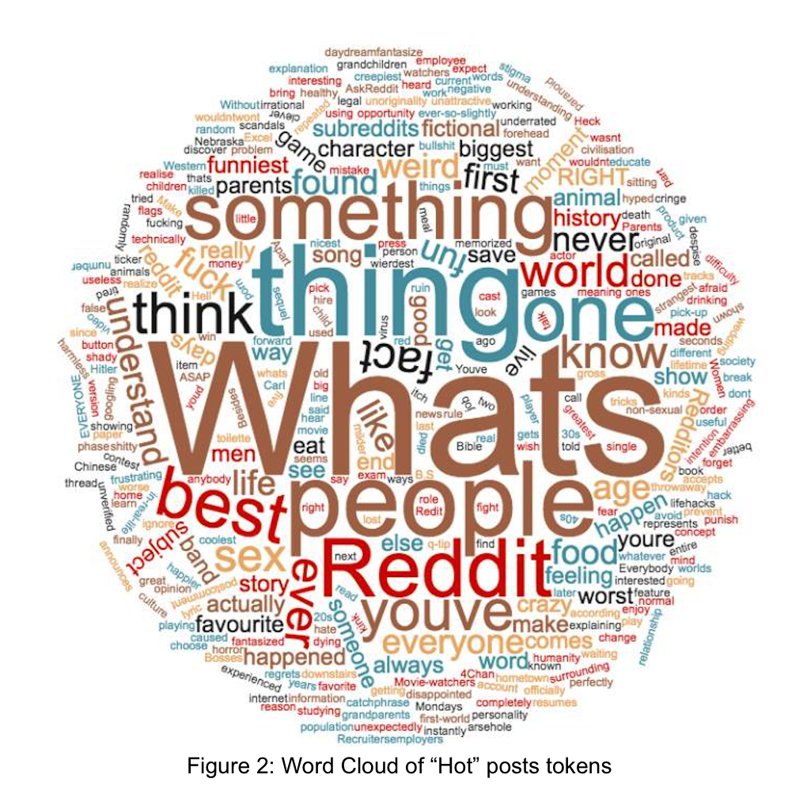
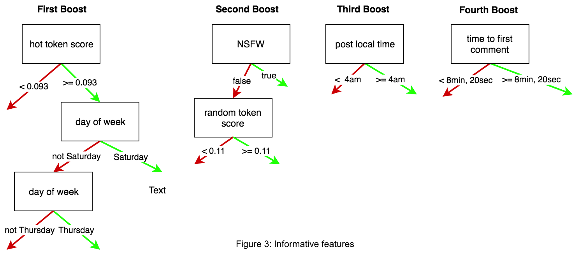

How to become a "Hot" post on  ?
?
EECS 349: Machine Learning | Northwestern University
- person Sarah Lim sarah@sarahlim.com
- person Aiqi Liu aiqiliu2018@u.northwestern.edu
- person Sameer Srivastava sameersrivastava2017@u.northwestern.edu
- person Jennie Werner jenniewerner2018@u.northwestern.edu
Motivation
Question-based discussion is a crucial user engagement mechanism across the Internet. Although question-based discussion has wide-ranging utility, there is little understanding of what makes particular questions more engaging or salient in a social web context.
In order to better understand what makes a question popular, we focus on a particular online community called AskReddit. AskReddit is an online forum with over 11.5 million subscribers, where users submit open-ended questions for community discussion.
Our main goals are:
- Predict whether a recently-submitted AskReddit question was a "hot" top 25 post
- Understand which features and properties are more successful in determining a "hot" top 25 post
Solution
We found decisions trees to be especially well suited for our tasks because we would like to understand more about the relative information gains provided by various attribute/value splits. We also used Naive Bayes and decision tree models.
Our features include the metadata features from the Reddit API and language features such as token_score and sense score because we assumed that certain wording and topic of the question title may effect the post’s popularity.
Below is the table of our metadata attributes and read more on our report about our language features.
| Feature | Type | Description |
|---|---|---|
| post_localTime | Numerical | Post time, author's local time zone |
| post_utcTime | Numerical | Post time, UTC |
| day_of_week | Nominal | Day of the week posted |
| question_type | Nominal | First question word in title |
| title_length | Numerical | Characters in title, excluding tags |
| nsfw | Boolean | Not Safe For Work flair added |
| serious | Boolean | Serious flair added |
| author_link_karma | Numerical | Net upvotes on author's prior link submissions |
| author_comment_karma | Numerical | Net upvotes on author's prior comments |
| author_account_age | Numerical | Time between author account creation and posting |
| author_gold | Boolean | Author has Reddit Gold status |
| time_to_first_comment | Numerical | Time between posting and first comment |
| 10min_comment | Numerical | Number of comments, ten minutes after posting |
| hot | Boolean | Categorical variable |
Training and Testing
Our dataset consists of 674 examples ― an equal number of top questions and random question for each day of the week. We use the Reddit API to retrieve the top 25 questions at time t of query (our positive examples), along with 25 other randomly-selected questions posted within the past 24 hours (our negative examples) of t.
We use Weka to train and evaluate a number of models using the remaining 90% of our original dataset. All models use 10-fold cross-validation. Our ZeroR baseline achieves 51.0708 accuracy, as we take care to balance the frequency of positive and negative instances throughout our dataset. The following section describes our selected classifiers.
One-level decision trees
We use one-level decision tree algorithms to understand which features provide the most information gain with respect to question performance.
- OneR produces a multi-way split on a single attribute
- DecisionStump, conversely, splits on a single attribute/value combination
Full decision trees
Decision trees are especially well-suited for our task, because they are supervised concept-learners, and we would like to understand more about the relative information gains provided by various attribute/value splits. With the possible exception of hybrid Naive Bayes/Decision Trees, decision tree models also encode conditional dependencies between features very well.
- J48Tree, Weka's implementation of Quinlan's C4.5 algorithm, chooses splits that maximize information gain measured in terms of Shannon entropy
- NBTree is a Naive Bayes and Decision Tree hybrid learning model. We would like to understand how this affects attribute selection, since a number of our features (e.g. all the temporal ones) seem intuitively dependent
- REPTree is similar to other decision tree learners, except that in the case of numeric values, the algorithm tries to minimize the total variance
- ADTree implements the alternating decision tree algorithm, which incorporates boosting into decision tree generation by treating each predicate node as a "weak hypothesis" and generating a real-valued prediction for that node. At test time, an instance traverses the tree based on the conditions it matches, and the cumulative sum over the corresponding predictions designates its final classification
Other
- NaiveBayesSimple, a Naive Bayes classifier, applies Bayes' theorem and makes strong conditional independence assumptions between features. Again, we would like to understand to what extent our feature space is linearly independent
- Logistic implements a multinomial logistic regression model, which we will use to interpret the extent to which our numerical features and output classification are monotonically-related
Results
 Alternating decision trees with 7 boosting iterations (as opposed to 10, the default setting) achieve the best performance of attempted classifiers. 10-fold cross-validation accuracy is 72.9819, an improvement of 21.911 over the ZeroR baseline.
The most important features from the tree are NLP-related features, which shows that certain words are common in "hot" questions, day of posting, which shows that weekend posts tend to perform better, time of posting, and early commenting behavior, which showed that questions receiving more engagement within minutes of posting are significantly more likely to achieve longer-term popularity.